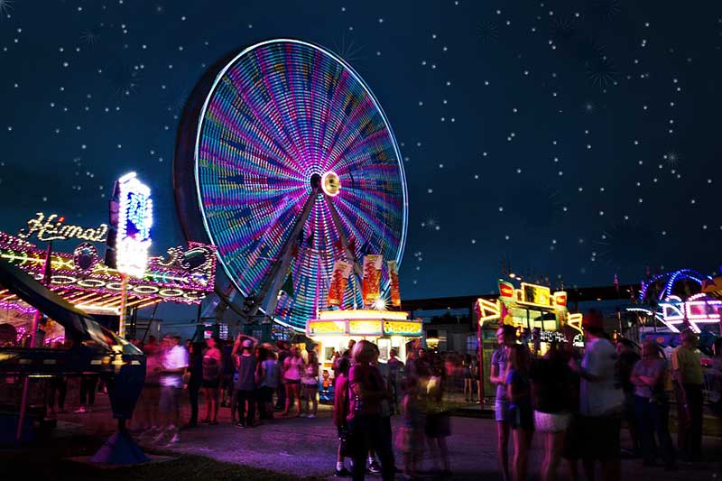

Back to Home
Community Spotlight: NC State Fair
“The deep fried Oreos are worth the trip and the watching the pig shows was entertaining! -Lucy Gomez”
Event Overview
The NC State Fair is North Carolina's largest agricultural celebration, held annually in Raleigh.
Visitors enjoy carnival rides, live concerts, livestock shows, and delicious fair foods.
This event attracts over 1 million people and offers fun for all ages.
Featured Activities
- Livestock shows
- Carnival rides and games
- Live concerts and performances
- Pig races and farm exhibits
- Famous fair foods

Attendee Tips
- Arrive early on weekends to beat the crowds.
- Buy tickets online in advance for cheaper admission.
- Wear comfortable walking shoes.
- Bring cash for food and games.